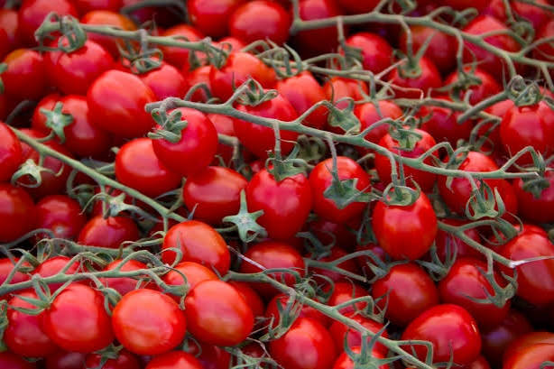
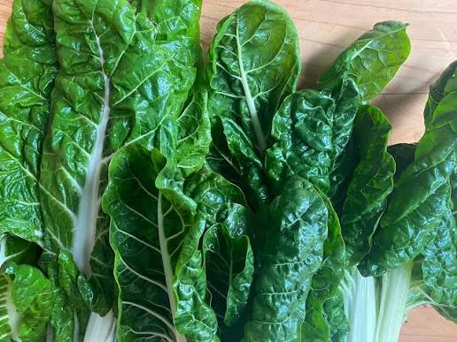

Kūmara
Kūmara (sweet potato) is a foundational crop brought to New Zealand by early Māori navigators. It thrives in well-drained, warm soils and remains a highly nutritious staple of the local diet.
Kūmara (sweet potato) is a foundational crop brought to New Zealand by early Māori navigators. It thrives in well-drained, warm soils and remains a highly nutritious staple of the local diet.

A summer favorite in many backyard gardens, tomatoes grow wonderfully when provided with plenty of direct sunlight, sturdy stakes for support, and consistent, deep watering routines.

Silverbeet is incredibly hardy and easy to grow throughout the year in New Zealand. Packed with essential iron and vitamins, it continuously produces dark green leaves ready for harvest.
Carrots flourish best in loose, sandy soil clear of rocks, allowing their roots to grow deep and straight. They provide a crunchy, sweet reward for patient gardeners.

Pumpkins require ample space to stretch out their sprawling vines over the summer months. Harvested in autumn, their thick skins allow them to store perfectly through the cold winter season.